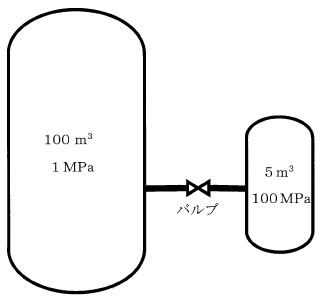

平成27年度 問32 化学プロセス
バルブを介して遮断されている2基の密閉したタンクがある。100 m3のタンクには1 MPaの気体が充填されており、5 m3のタンクには100 MPaの気体が充填されている。気体は共に同じもので理想気体であり。温度は共に25℃である。遮断しているバルブを開けて、2基のタンク内の圧力を均一とした場合の圧力として、最も適切な値はどれか。
なお、断熱膨張は考慮せず。温度は25℃一定とする。
また、気体の状態方程式はPV=nRTであり、Pは圧力［MPa］、Vは容積［m3］、nは気体のmol数［mol］、Rは気体定数［MPam3mol-1K-1］、Tは気体の温度［K］である。

①
3 MPa
②
5 MPa
③
7 MPa
④
9 MPa
⑤
6.1 MPa
正答
③ 7 MPa
バルブを開けた時、全体の体積Vは100+5＝105 m3です。また25℃の時の絶対温度Tは25+273=298Kです。
理想気体の状態方程式PV＝nRTより、各タンク内に含まれる気体の分子量はn＝PV/RTを計算すれば求まります。バルブを開けた後は、各タンクの分子量を合計した値となります。
- タンク1の気体の分子量n1：1×106×100/(R×298)
- タンク2の気体の分子量n2：100×106×5/(R×298)
理想気体の状態方程式より、バルブを開けた後の圧力Pは(n1+n2)RT/Vで計算できます。計算量が複雑に見えますが、MPaへの変換のために106は計算せず残しておくことが可能で、(R×298)は約分して消せます。
P＝nRT/V＝{1×106×100/(R×298)+100×106×5/(R×298)}×R×298 / 105 = 600/105 MPa = 5.7 MPa